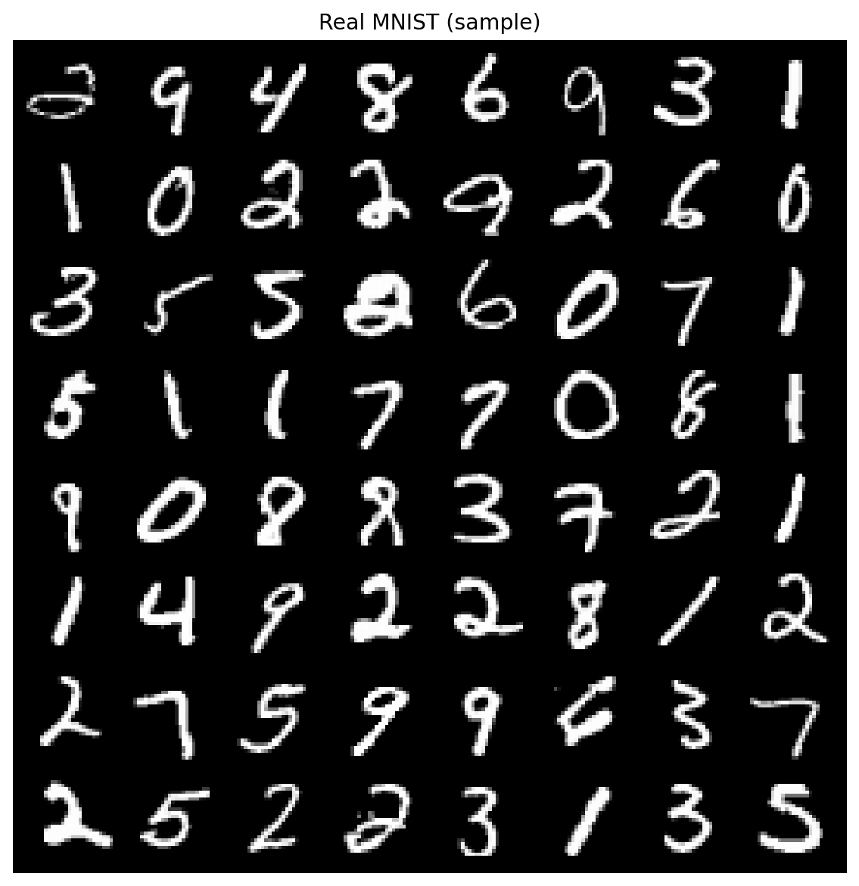
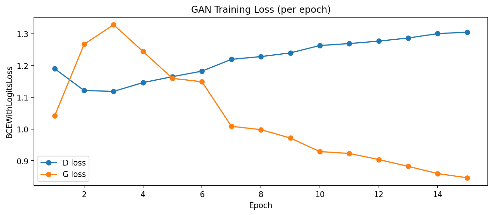
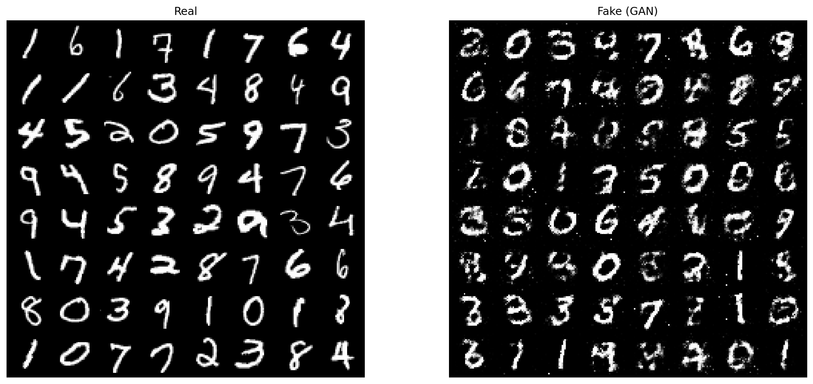
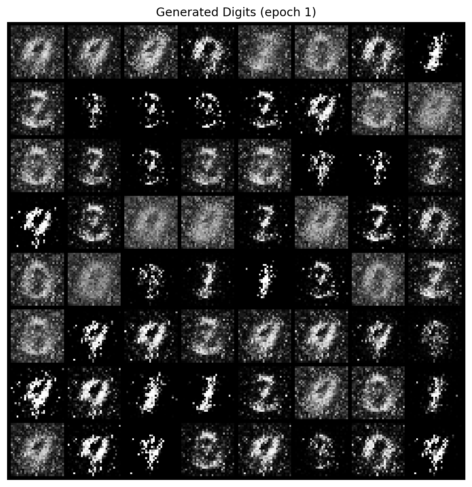
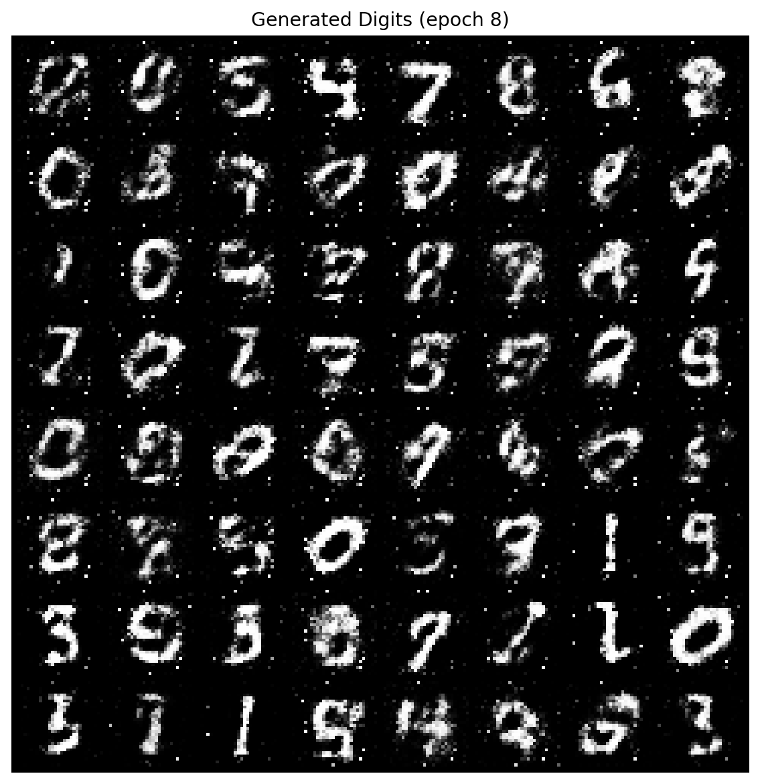
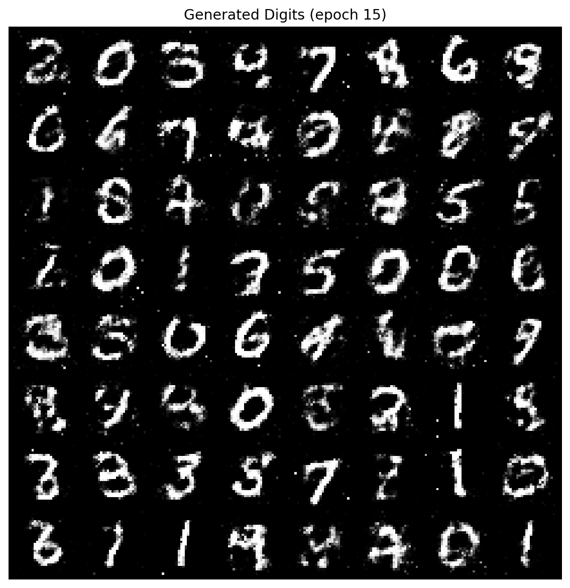

COMP-341L — Artificial Neural Networks Lab
Generative Adversarial Networks (GANs): Synthetic Handwritten Digits
| Student | Zarmeena Jawad |
| Roll No | B23F0115AI125 |
| Section | B.S AI - Red |
| Instructor | Ms. Shakeela Shaheen |
| Submission Date | April 26, 2026 |
Objective: Build and train a GAN to generate MNIST-like handwritten digits. The generated samples can be used to support data augmentation when labeled data is scarce and overfitting is observed in recognition models.
Table of Contents
Abstract— This work trains a Vanilla GAN (MLP-based generator and discriminator) on the MNIST handwritten digit dataset to produce synthetic digits. The data is normalized to [-1, 1] to align with the generator’s tanh output. Training is performed for 15 epochs using Adam optimization and BCEWithLogitsLoss. Performance is analyzed through epoch-wise loss curves and a qualitative comparison of real and generated images, with sample grids saved at each epoch.
Keywords— GAN, Vanilla GAN, MNIST, Synthetic Data Generation, MLP, BCEWithLogitsLoss, PyTorch.
When a recognition model is trained on a small dataset, it can memorize training examples and fail to generalize. GANs address this by learning the underlying distribution of the training data and generating new samples. A GAN consists of two components trained together: a generator that produces fake samples from random noise, and a discriminator that predicts whether a sample is real or fake.
The notebook supports MNIST CSV (Kaggle) and falls back to torchvision MNIST when Kaggle credentials are not present. Each digit image is normalized to [-1, 1] so that the real data range matches the generator’s output range. This reduces output saturation and improves training stability.
transform = transforms.Compose([
transforms.ToTensor(), # [0, 1]
transforms.Normalize((0.5,), (0.5,)) # -> [-1, 1]
])
A Vanilla GAN is implemented using fully-connected layers (MLPs). The generator maps a latent vector z to a 784-dimensional image vector (28×28 pixels). The discriminator maps the flattened image vector to a single logit value that represents the real/fake decision.
class Generator(nn.Module):
def __init__(self, z_dim, out_dim):
super().__init__()
self.net = nn.Sequential(
nn.Linear(z_dim, 256),
nn.BatchNorm1d(256),
nn.ReLU(True),
nn.Linear(256, 512),
nn.BatchNorm1d(512),
nn.ReLU(True),
nn.Linear(512, 1024),
nn.BatchNorm1d(1024),
nn.ReLU(True),
nn.Linear(1024, out_dim),
nn.Tanh()
)class Discriminator(nn.Module):
def __init__(self, in_dim):
super().__init__()
self.net = nn.Sequential(
nn.Linear(in_dim, 512),
nn.LeakyReLU(0.2, inplace=True),
nn.Dropout(0.2),
nn.Linear(512, 256),
nn.LeakyReLU(0.2, inplace=True),
nn.Dropout(0.2),
nn.Linear(256, 1) # logits
)15, batch size = 128, latent dim =
100, optimizer = Adam, lr =
2e-4, betas = (0.5, 0.999).1.3052, G = 0.8467.
Training alternates between updating the discriminator (to classify real as 1 and fake as 0) and updating the generator (to make fake samples classified as real). A fixed noise batch is used for consistent epoch-to-epoch sample grids.
# D step: learn to separate real and fake
real_y = torch.ones(bsz, 1, device=device)
fake_y = torch.zeros(bsz, 1, device=device)
d_real = loss(D(real_flat), real_y)
fake_flat = G(torch.randn(bsz, z_dim, device=device)).detach()
d_fake = loss(D(fake_flat), fake_y)
d_loss = d_real + d_fake
d_loss.backward(); opt_D.step()
# G step: learn to fool D
gen_flat = G(torch.randn(bsz, z_dim, device=device))
g_loss = loss(D(gen_flat), real_y)
g_loss.backward(); opt_G.step()The learning progress is captured by epoch-wise losses for both networks and by visual quality of generated digits. Since GAN losses may fluctuate, qualitative inspection of samples is important to judge realism and diversity.





GAN optimization is sensitive because two models are learning simultaneously. If the discriminator becomes too accurate, the generator’s gradients become weak and training slows. Another common issue is mode collapse, where the generator produces only a small subset of digit styles. Monitoring sample diversity and balancing update speeds are practical ways to manage these challenges.
To explore different behaviors, the following changes can be tested:
100 → 50 → 200 (controls generator
input capacity).
2e-4 → 1e-4 or
5e-4 (affects stability and balance).
This lab demonstrates end-to-end GAN training for digit synthesis using a Vanilla GAN with MLP layers. The generated digits improve across epochs, and the saved sample grids and loss curves provide both quantitative and qualitative evidence of adversarial learning. Such synthetic samples can be used to augment limited datasets and reduce overfitting in recognition tasks.
[1] I. Goodfellow et al., “Generative Adversarial Nets,” in Advances in Neural Information Processing Systems, 2014.